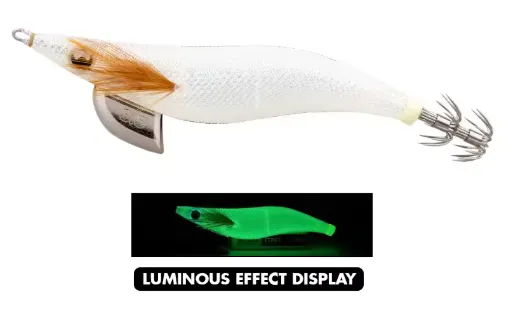

Mejor opción para: aguas claras, días luminosos y calamares recelosos.
| Condición | Eficiencia |
|---|---|
| ☀️🌊 Día soleado / agua clara | 🔥 Excelente |
| 🌊💎 Aguas muy claras | 🟢🟢 Muy alta |
| 🌙💡 Noche clara | 🟢 Alta |
| 🦑😴 Calamares recelosos | 🟢🟢 Muy alta |
| 🌫️ Aguas turbias | 🟡 Media |